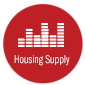
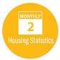
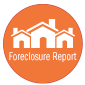

FastSTATS are updated monthly and allow you to access all of the current and historical market reports for San Diego County. You can access all of these reports by logging in to REALTOR®Dash*.
|
Local Market Updates – Reports for 98 San Diego County zip codes using an interactive map. Show your expert knowledge of local submarkets at client presentations, at open houses and in all of your personal marketing. |
|  |
Housing Supply* – Breaks out property type, square footage ranges, and price ranges by metric. Know how the market changes at these critical points of intersection. |
|  |
Monthly Indicators* – Dig into market trends for many housing metrics. Track seasonality and performance over time to become the expert in the overall market. |
|  |
Foreclosure Report* – Focuses on lender-mediated (foreclosure and short sale) market activity for all 98 San Diego County zip codes. |
*Must login to REALTOR® Dash to view this report.
You can custom brand these reports
with your company's logo! Just download the pdf and add your logo. Need help?
Click here for instructions.